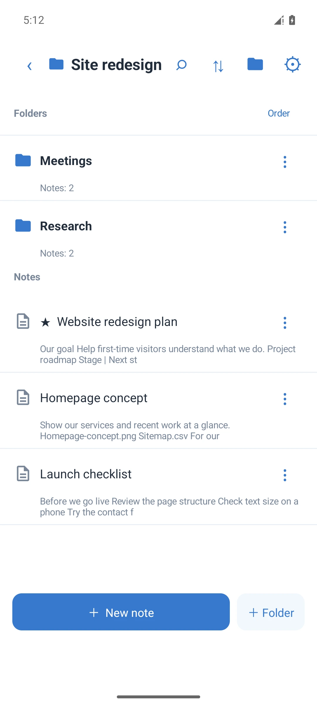
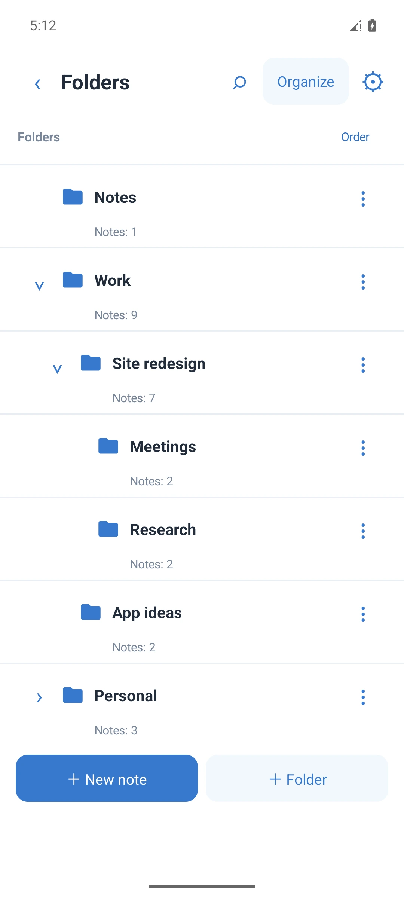
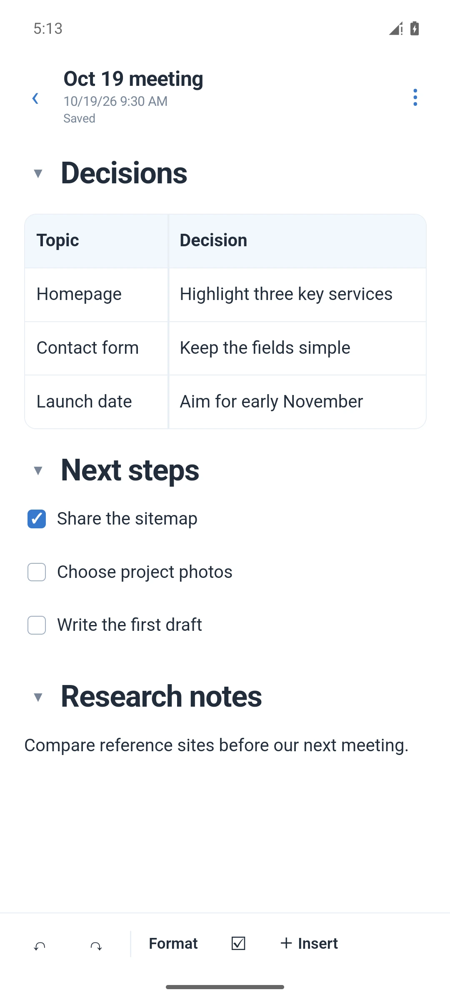
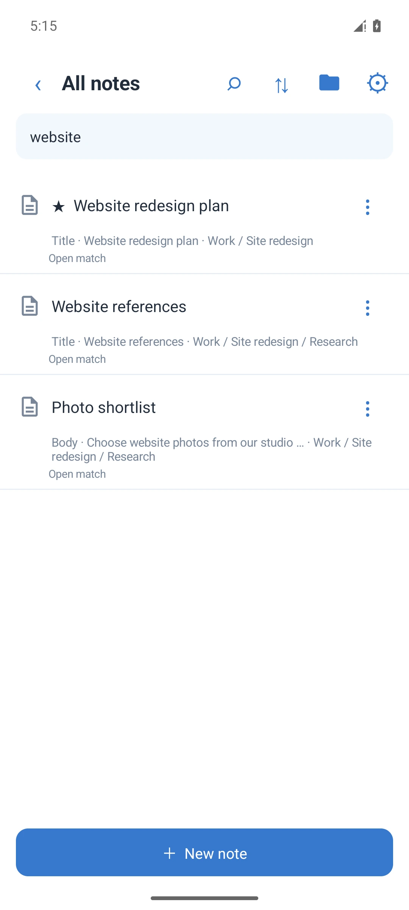
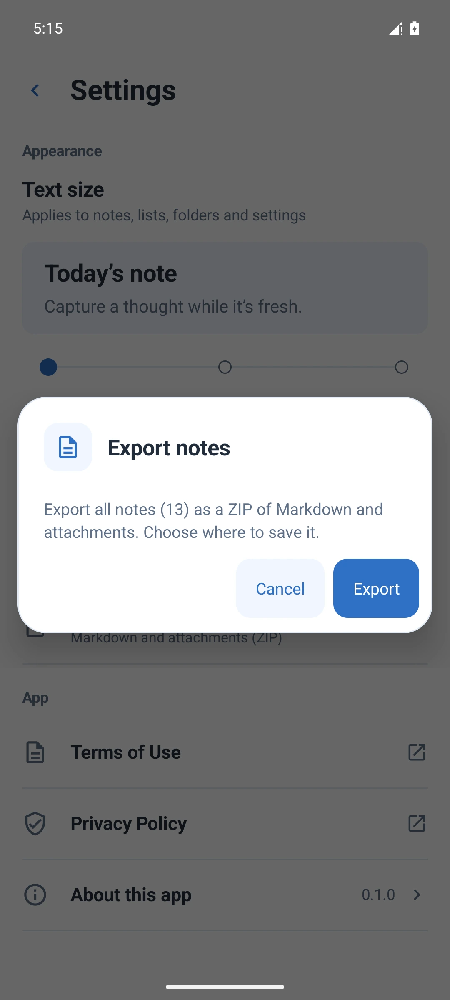

Your notes.
In folders.
Folders inside folders.
Find notes and files where you left them.


A place for every project.
Put Site redesign inside Work, then add a Meetings folder inside Site redesign.
Meeting notes and research can each have their own place within the same project.
-
Work
-
Site redesign
-
Meetings
- Oct 19 meeting
- Research
-
-
Write right where
it belongs.
Open Meetings and write a note. Strunote saves it in that folder. You can move notes and folders later.
Meeting notes
with files attached.
Record decisions in a table, track next steps with a checklist, and attach images or files so you can review everything together.

Reorganize
as you go.
Move and reorder folders as projects grow. If a note gets long, split part of it into a new note. The original keeps a link so you can find it again.
Decisions
Outline the launch page
Compare reference sites
Review at the next meeting
Find your notes.
Take them with you.
Find a note by
what it says.
Search note titles and bodies for a word you remember. Open a result to jump straight to the match.

Export the whole
folder structure.
Export notes and attachments in a ZIP that preserves your folder structure. You can read the exported notes as Markdown files on your computer.

Notes stay on your device.
Read and write offline without creating an account.
FAQ
Which devices are supported?
Strunote is an Android app. Check compatibility with your device on Google Play.
Is it free?
Strunote is free to use. Ads appear in note and folder lists.
Can I move my notes to a new phone?
On compatible Android devices, copy data from your old device when setting up the new one to transfer notes, folders, and attachments. Strunote does not automatically sync across devices.
Can I import an exported ZIP?
The ZIP lets you read notes and open attachments outside the app. Strunote does not import ZIP files.